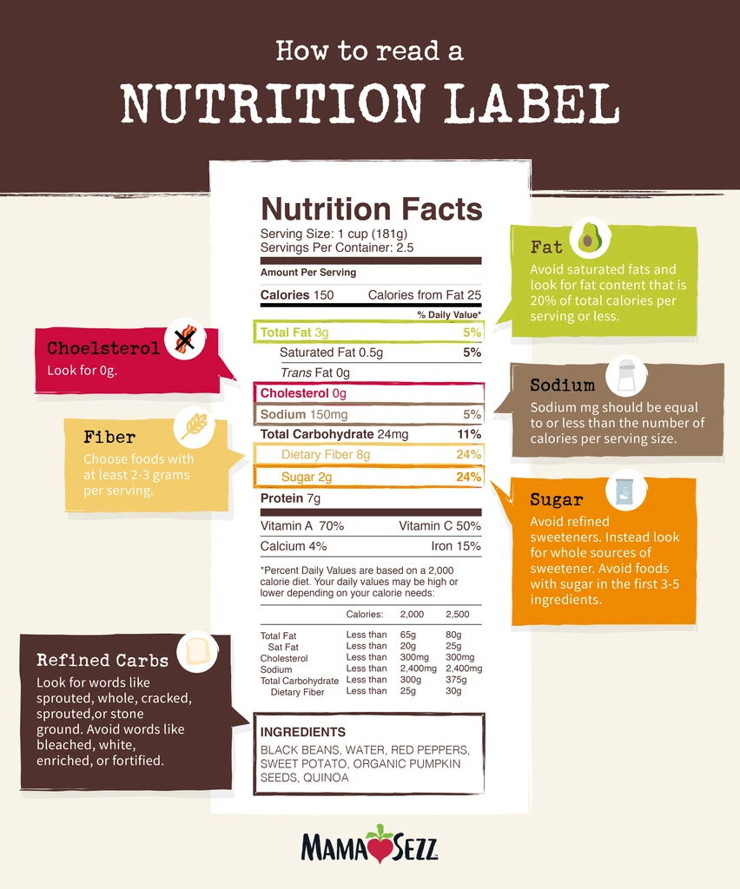

Reading a Nutrition Label
With this diet, the goal is to eat mostly fresh and whole foods. However, you will need to buy some canned and boxed foods. Here are some tips on reading a nutrition facts label:
Check the ingredients list first!
Ingredients are listed by quantity with the largest quantity listed first. If the first ingredient is a refined grain, a sugar or hydrogenated oil, that product is most likely healthy.
You want ingredient lists to be as short as possible. If it's longer than 2 or 3 lines, it's highly processed. You want to avoid processed foods.
Look for the many forms of sugar, so you can avoid them. Right now, there are 56 different names and that number is constantly growing. Here is one list: The 56 Most Common Names for Sugar.
Here are few names to avoid:- cane sugar
- malt syrup
- rice syrup
- barley malt
- maltodextrin
- dextran
- fructose
- corn sweetener
Check out the serving size.
The number of calories and nutrients are linked to the serving size. Sometimes, it doesn’t seem like a product is high in calories until you realize the serving size is very small!
When eating fruits and vegetables, the serving size is limitless. However, when consuming boxed or canned foods, pay attention to the serving size to avoid overdoing it.
Just because it says 0, doesn’t mean it is truly 0.
Manufacturers round on their nutritional labels, so you only see whole numbers. Just because the label says 0 grams of sugar or fat, does not mean it is actually 0. It could be 0.4 grams, enough to trigger your health issues. ALWAYS check the ingredients for the full truth.
Fiber
Fiber is an essential part of your diet, which is why we are increasing the amounts of fruits and vegetables in this diet. Don’t let boxed and canned foods hinder you. Choose foods with at least 2-3 grams of fibers per serving to support your diet
Cholesterol
Cholesterol in processed foods is usually linked to animal products. Check your ingredients to know the source of the cholesterol. The goal is to choose box and canned food with cholesterol as close to 0 as possible.
Avoid "Natural Flavors"
"Natural flavors" are popular because they can make processed foods taste much closer to the natural product. However, natural flavors are manufactured in a lab and only CONTAIN plant and/or animal material. Manufacturers are not required to disclose exactly what materials.
In reality, natural flavors are not much different than artificial flavors and can have negative health effects. It’s best to avoid them on this diet. To read more, check out: Natural Flavors: Should You Eat Them?
Don’t believe the claims. Read the nutritional label
Because of marketing, many foods have healthy claims that aren’t the complete truth. ALWAYS read the label and check all ingredients. Here are a few misleading claims:
- Natural (may have only worked with a natural source at some point)
- Low-fat (usually means extra sugar added for flavor)
- No added sugar (check for artificial sugars)
- Gluten-free (may contain unhealthy fats and sugar)
- Organic (may have sugar or be highly processed)
- Fortified or enriched (nutrients have been added to make up those lost in processing)
To find out about more misleading claims, read How to Read Food Labels Without Being Tricked.
Remember: Ingredients trump nutrition facts!!!
Good articles about reading a nutritional label:
- Healthline | How to Read Food Labels Without Being Tricked
- Clean Cuisine | How to Understand Whole Food Nutrition on Food Labels
- Mama Sezz | Learn How to Read a Nutrition Label
